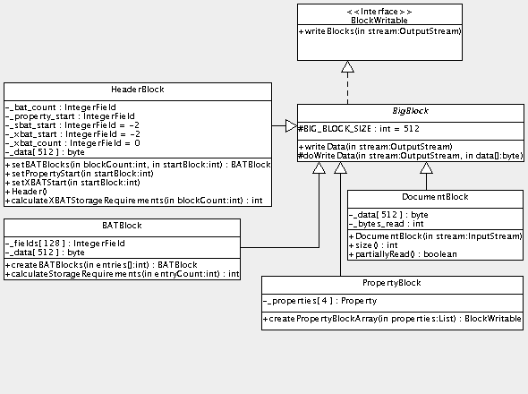
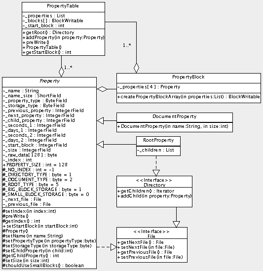
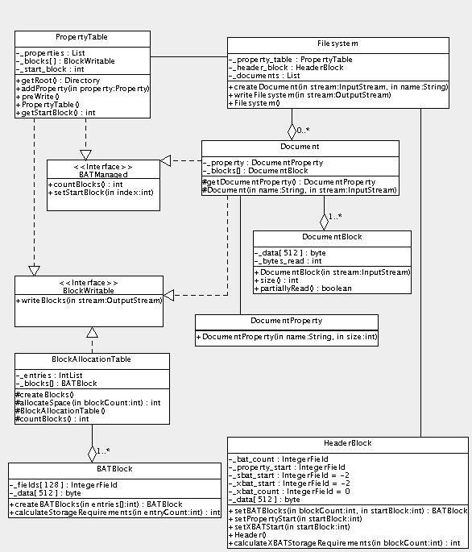
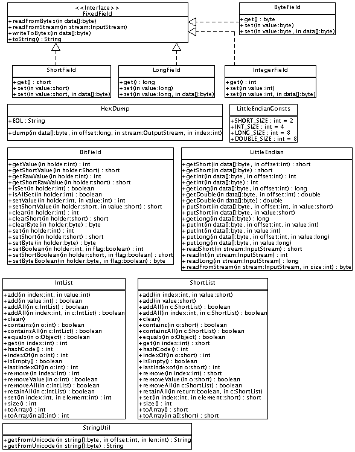
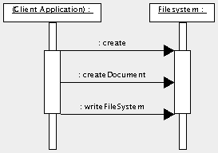
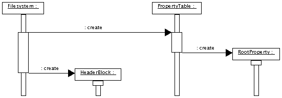
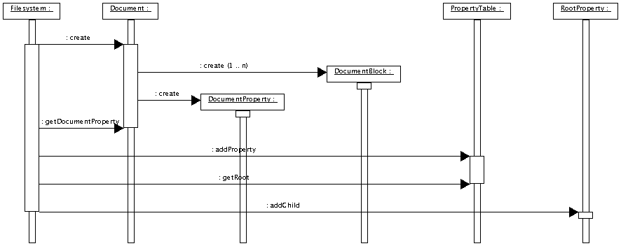
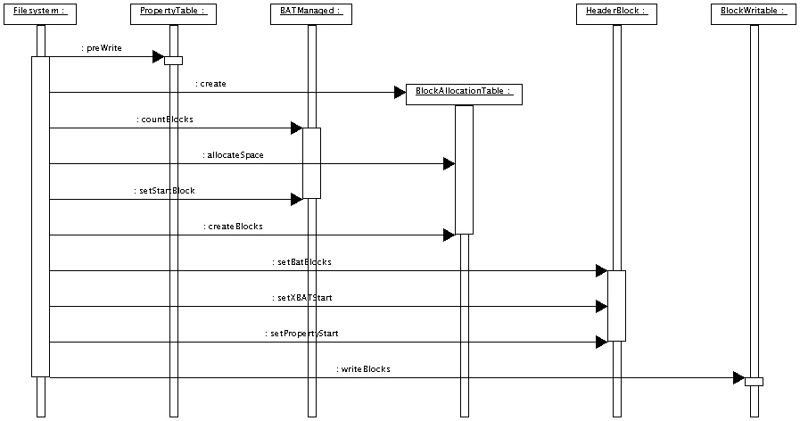
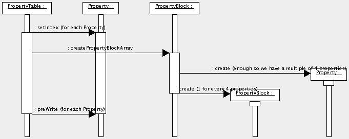
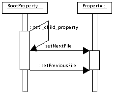

and new (OOXML - Office Open XML) formats.")

Apache POI™ - POIFS - Design Document
POIFS Design Document
This document describes the design of the POIFS system. It is organized as follows:
- Scope: A description of the limitations of this document.
- Assumptions: The assumptions on which this design is based.
- Design Considerations: The constraints and goals applied to the design.
- Design: The design of the POIFS system.
Scope
This document is written as part of an iterative process. As that process is not yet complete, neither is this document.
Assumptions
The design of POIFS is not dependent on the code written for the proof-of-concept prototype POIFS package.
Design Considerations
As usual, the primary considerations in the design of the POIFS assumption involve the classic space-time tradeoff. In this case, the main consideration has to involve minimizing the memory footprint of POIFS. POIFS may be called upon to create relatively large documents, and in web application server, it may be called upon to create several documents simultaneously, and it will likely co-exist with other Serializer systems, competing with those other systems for space on the server.
We've addressed the risk of being too slow through a proof-of-concept prototype. This prototype for POIFS involved reading an existing file, decomposing it into its constituent documents, composing a new POIFS from the constituent documents, and writing the POIFS file back to disk and verifying that the output file, while not necessarily a byte-for-byte image of the input file, could be read by the application that generated the input file. This prototype proved to be quite fast, reading, decomposing, and re-generating a large (300K) file in 2 to 2.5 seconds.
While the POIFS format allows great flexibility in laying out the documents and the other internal data structures, the layout of the filesystem will be kept as simple as possible.
Design
The design of the POIFS is broken down into two parts: discussion of the classes and interfaces, and discussion of how these classes and interfaces will be used to convert an appropriate Java InputStream (such as an XML stream) to a POIFS output stream containing an HSSF document.
The classes and interfaces used in the POIFS are broken down as follows:
| Package | Contents |
|---|---|
| net.sourceforge.poi.poifs.storage | Block classes and interfaces |
| net.sourceforge.poi.poifs.property | Property classes and interfaces |
| net.sourceforge.poi.poifs.filesystem | Filesystem classes and interfaces |
| net.sourceforge.poi.util | Utility classes and interfaces |
Block Classes and Interfaces
The block classes and interfaces are shownin the following class diagram.

| Class/Interface | Description |
|---|---|
| BATBlock | The BATBlock class represents a single big block containing 128
BAT entries. Its _fields array is used to read and write the BAT entries into the _data array. Its createBATBlocks method is used to create an array of BATBlock instances from an array of int BAT entries. Its calculateStorageRequirements method calculates the number of BAT blocks necessary to hold the specified number of BAT entries. |
| BigBlock | The BigBlock class is an abstract class representing the common big block of 512 bytes. It implements BlockWritable, trivially delegating the writeBlocks method of BlockWritable to its own abstract writeData method. |
| BlockWritable | The BlockWritable interface defines a single method, writeBlocks, that is used to write an implementation's block data to an OutputStream. |
| DocumentBlock | The DocumentBlock class is used by a
Document
to holds its raw data. It also retains the number of bytes read, as this is used by the
Document class to determine the total size of the data, and is also used internally to
determine whether the block was filled by the
InputStream
or not.
The DocumentBlock constructor is passed an InputStream from which to fill its _data array. The size method returns the number of bytes read (_bytes_read) when the instance was constructed. The partiallyRead method returns true if the _data array was not completely filled, which may be interpreted by the Document as having reached the end of file point. Typical use of the DocumentBlock class is like this:
while (true) {
DocumentBlock block = new DocumentBlock(stream);
blocks.add(block);
size += block.size();
if (block.partiallyRead()) {
break;
}
}
|
| HeaderBlock | The HeaderBlock class is used to contain the data found in a POIFS header.
Its IntegerField members are used to read and write the appropriate entries into the _data array. Its setBATBlocks , setPropertyStart , and setXBATStart methods are used to set the appropriate fields in the _data array. The calculateXBATStorageRequirements method is used to determine how many XBAT blocks are necessary to accommodate the specified number of BAT blocks. |
| PropertyBlock | The PropertyBlock class is used to contain
Property
instances for the
PropertyTable
class. It contains an array, _properties of 4 Property instances, which together comprise the 512 bytes of a BigBlock. The createPropertyBlockArray method is used to convert a List of Property instances into an array of PropertyBlock instances. The number of Property instances is rounded up to a multiple of 4 by creating empty anonymous inner class extensions of Property. |
Property Classes and Interfaces
The property classes and interfaces are shown in the following class diagram.

| Class/Interface | Description |
|---|---|
| Directory | The Directory interface is implemented by the
RootProperty
class. It is not strictly necessary for the initial POIFS implementation, but when the POIFS
supports directory elements, this interface
will be more widely implemented, and so is included in the design at this point to ease the
eventual support of directory elements. Its methods are a getter/setter pair, getChildren , returning an Iterator of Property instances; and addChild , which will allow the caller to add another Property instance to the Directory's children. |
| DocumentProperty | The DocumentProperty class is a trivial extension of
Property
and is used by Document to keep track of its associated entry in
the
PropertyTable. Its constructor takes a name and the document size, on the assumption that the Document will not create a DocumentProperty until after it has created the storage for the document data and therefore knows how much data there is. |
| File | The File interface specifies the behavior of reading and writing the next and previous child fields of a Property. |
| Property | The Property class is an abstract class that defines the basic data
structure of an element of the
Property Table. Its ByteField, ShortField, and IntegerField members are used to read and write data into the appropriate locations in the _raw_data array. The _index member is used to hold a Propery instance's index in the List of Property instances maintained by PropertyTable, which is used to populate the child property of parent Directory properties and the next property and previous property of sibling File properties. The _name , _next_file , and _previous_file members are used to help fill the appropriate fields of the _raw_data array. Setters are provided for some of the fields (name, property type, node color, child property, size, index, start block), as well as a few getters (index, child property). The preWrite method is abstract and is used by the owning PropertyTable to iterate through its Property instances and prepare each for writing. The shouldUseSmallBlocks method returns true if the Property's size is sufficiently small - how small is none of the caller's business. |
| PropertyBlock | See the description in PropertyBlock. |
| PropertyTable | The PropertyTable class holds all of the
DocumentProperty
instances and the
RootProperty
instance for a
Filesystem
instance. It maintains a List of its Property instances ( _properties ), and when prepared to write its data by a call to preWrite , it gets and holds an array of PropertyBlock instances ( _blocks) . It also maintains its start block in its _start_block member. It has a method, getRoot , to get the RootProperty, returning it as an implementation of Directory, and a method to add a Property, addProperty , and a method to get its start block, getStartBlock . |
| RootProperty | The RootProperty class acts as the Directory for
all of the
DocumentProperty
instance. As such, it is more of a pure directory
entry
than a proper root entry
in the Property Table, but the initial
POIFS implementation does not warrant the additional complexity of a full-blown root entry,
and so it is not modeled in this design. It maintains a List of its children, _children , in order to perform its directory-oriented duties. |
Filesystem Classes and Interfaces
The property classes and interfaces are shown in the following class diagram.

| Class/Interface | Description |
|---|---|
| Filesystem | The Filesystem class is the top-level class that manages the creation of a
POIFS document. It maintains a PropertyTable instance in its _property_table member, a HeaderBlock instance in its _header_block member, and a List of its Document instances in its _documents member. It provides methods for a client to create a document ( createDocument ), and a method to write the Filesystem to an OutputStream ( writeFilesystem ). |
| BATBlock | See the description in BATBlock |
| BATManaged | The BATManaged interface defines common behavior for objects whose location
in the written file is managed by the Block Allocation
Table. It defines methods to get a count of the implementation's BigBlock instances ( countBlocks ), and to set an implementation's start block ( setStartBlock ). |
| BlockAllocationTable | The BlockAllocationTable is an implementation of the
POIFS Block Allocation Table. It is only created when the
Filesystem
is about to be written to an
OutputStream. It contains an IntList of block numbers for all of the BATManaged implementations owned by the Filesystem, _entries , which is filled by calls to allocateSpace . It fills its array, _blocks , of BATBlock instances when its createBATBlocks method is called. This method has to take into account its own storage requirements, as well as those of the XBAT blocks, and so calls BATBlock.calculateStorageRequirements and HeaderBlock.calculateXBATStorageRequirements repeatedly until the counts returned by those methods stabilize. The countBlocks method returns the number of BATBlock instances created by the preceding call to createBlocks. |
| BlockWritable | See the description in BlockWritable |
| Document | The Document class is used to contain a document, such as an HSSF workbook.
It has its own DocumentProperty ( _property ) and stores its data in a collection of DocumentBlock instances ( _blocks ). It has a method, getDocumentProperty , to get its DocumentProperty. |
| DocumentBlock | See the description in DocumentBlock |
| DocumentProperty | See the description in DocumentProperty |
| HeaderBlock | See the description in HeaderBlock |
| PropertyTable | See the description in PropertyTable |
Utility Classes and Interfaces
The utility classes and interfaces are shown in the following class diagram.

| Class/Interface | Description |
|---|---|
| BitField | The BitField class is used primarily by HSSF code to manage bit-mapped fields of HSSF records. It is not likely to be used in the POIFS code itself and is only included here for the sake of complete documentation of the POI utility classes. |
| ByteField | The ByteField class is an implementation of FixedField for the purpose of managing reading and writing to a byte-wide field in an array of bytes. |
| FixedField | The FixedField interface defines a set of methods for reading a field from an array of bytes or from an InputStream, and for writing a field to an array of bytes. Implementations typically require an offset in their constructors that, for the purposes of reading and writing to an array of bytes, makes sure that the correct bytes in the array are read or written. |
| HexDump | The HexDump class is a debugging class that can be used to dump an array of
bytes
to an OutputStream. The static method
dump
takes an array of bytes, a long offset that is used to label the
output, an open
OutputStream, and an
int
index that specifies the starting index within the array of
bytes. The data is displayed 16 bytes per line, with each byte displayed in hexadecimal format and again in printable form, if possible (a byte is considered printable if its value is in the range of 32 ... 126). Here is an example of a small array of bytes with an offset of 0x110:
00000110 C8 00 00 00 FF 7F 90 01 00 00 00 00 00 00 05 01 ................
00000120 41 00 72 00 69 00 61 00 6C 00 A.r.i.a.l.
|
| IntegerField | The IntegerField class is an implementation of FixedField for the purpose of managing reading and writing to an integer-wide field in an array of bytes. |
| IntList | The IntList class is a work-around for functionality missing in Java (see
https://developer.java.sun.com/developer/bugParade/bugs/4487555.html
for details); it is a simple growable array of ints that gets around the
requirement of wrapping and unwrapping ints in
Integer
instances in order to use the
java.util.List
interface.
IntList mimics the functionality of the java.util.List interface as much as possible. |
| LittleEndian | The LittleEndian class provides a set of static methods for reading and writing shorts, ints, longs, and doubles in and out of byte arrays, and out of InputStreams, preserving the Intel byte ordering and encoding of these values. |
| LittleEndianConsts | The LittleEndianConsts interface defines the width of a short, int, long, and double as stored by Intel processors. |
| LongField | The LongField class is an implementation of FixedField for the purpose of managing reading and writing to a long-wide field in an array of bytes. |
| ShortField | The ShortField class is an implementation of FixedField for the purpose of managing reading and writing to a short-wide field in an array of bytes. |
| ShortList | The ShortList class is a work-around for functionality missing in Java (see
https://developer.java.sun.com/developer/bugParade/bugs/4487555.html
for details); it is a simple growable array of shorts that gets around the
requirement of wrapping and unwrapping shorts in
Short
instances in order to use the
java.util.List
interface.
ShortList mimics the functionality of the java.util.List interface as much as possible. |
| StringUtil | The StringUtil class manages the processing of Unicode strings. |
Scenarios
This section describes the scenarios of how the POIFS classes and interfaces will be used to convert an appropriate XML stream to a POIFS output stream containing an HSSF document.
It is broken down as suggested by the following scenario diagram:

| Step | Description |
|---|---|
| 1 | The Filesystem is created by the client application. |
| 2 | The client application tells the Filesystem to create a document, providing an InputStream and the name of the document. This may be repeated several times. |
| 3 | The client application asks the Filesystem to write its data to an OutputStream. |
Initialization
Initialization of the POIFS system is shown in the following scenario diagram:

| Step | Description |
|---|---|
| 1 | The Filesystem object, which is created for each request to convert an appropriate XML stream to a POIFS output stream containing an HSSF document, creates its PropertyTable. |
| 2 | The PropertyTable creates its RootProperty instance, making the RootProperty the first Property in its List of Property instances. |
| 3 | The Filesystem creates its HeaderBlock instance. It should be noted that the decision to create the HeaderBlock at Filesystem initialization is arbitrary; creation of the HeaderBlock could easily and harmlessly be postponed to the appropriate moment in writing the filesystem. |
Creating a Document
Creating and adding a document to a POIFS system is shown in the following scenario diagram:

| Step | Description |
|---|---|
| 1 | The Filesystem instance creates a new Document instance. It will store the newly created Document in a List of BATManaged instances. |
| 2 | The Document reads data from the provided InputStream, storing the data in DocumentBlock instances. It keeps track of the byte count as it reads the data. |
| 3 | The Document creates a DocumentProperty to keep track of its property data. The byte count is stored in the newly created DocumentProperty instance. |
| 4 | The Filesystem requests the newly created DocumentProperty from the newly created Document instance. |
| 5 | The Filesystem sends the newly created DocumentProperty to the Filesystem's PropertyTable so that the PropertyTable can add the DocumentProperty to its List of Property instances. |
| 6 | The Filesystem gets the RootProperty from its PropertyTable. |
| 7 | The Filesystem adds the newly created DocumentProperty to the RootProperty. |
Although typical deployment of the POIFS system will only entail adding a single Document (the workbook) to the Filesystem, there is nothing in the design to prevent multiple Documents from being added to the Filesystem. This flexibility can be employed to write summary information document(s) in addition to the workbook.
Writing the Filesystem
Writing the filesystem is shown in the following scenario diagram:

| Step | Description | |
|---|---|---|
| 1 | The Filesystem adds the PropertyTable to its List of BATManaged instances and calls the PropertyTable's preWrite method. The action taken by the PropertyTable is shown in the PropertyTable preWrite scenario diagram. | |
| 2 | The Filesystem creates the BlockAllocationTable. | |
| 3 | The Filesystem gets the block count from the BATManaged instance. | These three steps are repeated for each BATManaged instance in the Filesystem's List of BATManaged instances (i.e., the Documents, in order of their addition to the Filesystem, followed by the PropertyTable). |
| 4 | The Filesystem sends the block count to the BlockAllocationTable, which adds the appropriate entries to is IntList of entries, returning the starting block for the newly added entries. | |
| 5 | The Filesystem gives the start block number to the BATManaged instance. If the BATManaged instance is a Document, it sets the start block field in its DocumentProperty. | |
| 6 | The Filesystem tells the BlockAllocationTable to create its BatBlocks. | |
| 7 | The Filesystem gives the BAT information to the HeaderBlock so that it can set its BAT fields and, if necessary, create XBAT blocks. | |
| 8 | If the filesystem is unusually large (over 7MB), the HeaderBlock will create XBAT blocks to contain the BAT data that it cannot hold directly. In this case, the Filesystem tells the HeaderBlock where those additional blocks will be stored. | |
| 9 | The Filesystem gives the PropertyTable start block to the HeaderBlock. | |
| 10 | The
Filesystem
tells the
BlockWritable
instance to write its blocks to the provided
OutputStream. This step is repeated for each BlockWritable instance, in this order:
|
|
PropertyTable preWrite scenario diagram

| Step | Description |
|---|---|
| 1 | The PropertyTable calls setIndex for each of its Property instances, so that each Property now knows its index within the PropertyTable's List of Property instances. |
| 2 | The PropertyTable requests the PropertyBlock class to create an array of PropertyBlock instances. |
| 3 | The
PropertyBlock
calculates the number of empty
Property
instances it needs to create and creates them. The algorithm for the number to create is:
block_count = (properties.size() + 3) / 4;
emptyPropertiesNeeded = (block_count * 4) - properties.size();
|
| 4 | The PropertyBlock creates the required number of PropertyBlock instances from the List of Property instances, including the newly created empty Property instances. |
| 5 | The PropertyTable calls preWrite on each of its Property instances. For DocumentProperty instances, this call is a no-op. For the RootProperty, the action taken is shown in the RootProperty preWrite scenario diagram. |
RootProperty preWrite scenario diagram

| Step | Description | |
|---|---|---|
| 1 | The RootProperty sets its child property with the index of the child Property that is first in its List of children. | |
| 2 | The RootProperty sets its child's next property field with the index of the child's next sibling in the RootProperty's List of children. If the child is the last in the List, its next property field is set to -1. | These two steps are repeated for each File in the RootProperty's List of children. |
| 3 | The RootProperty sets its child's previous property field with a value of -1. | |